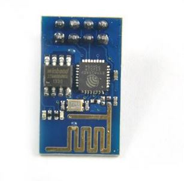
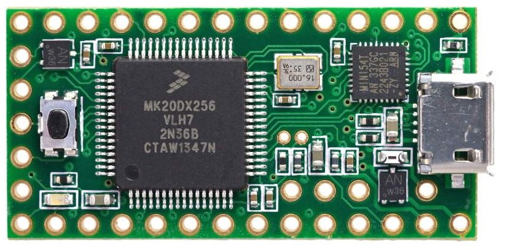
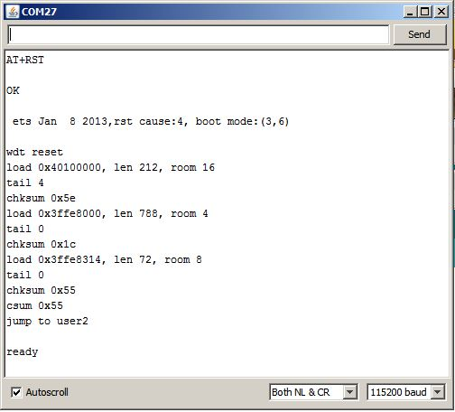
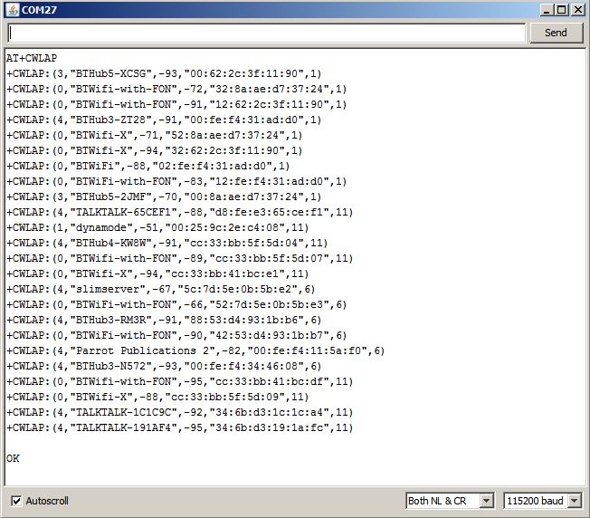
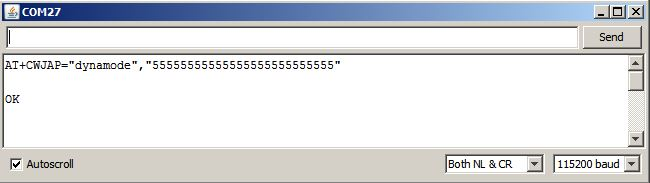
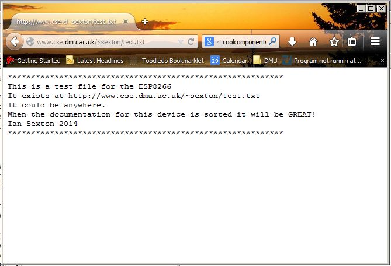
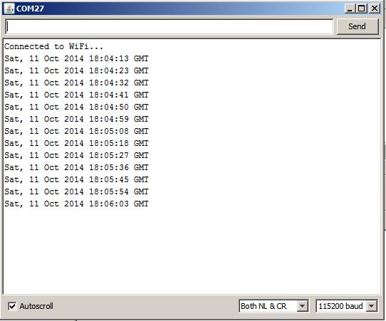
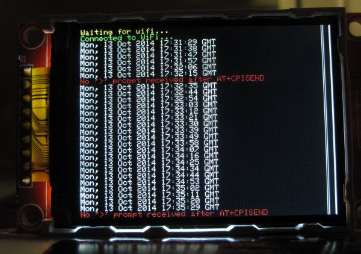

ESP8266 Teensy Time
It isn't often that a new chip on the block causes a stir like the
ESP8266 has!
What is it? It's a WiFi interface.
To be more precise it's a WiFi interface suited to microcontroller
applications, IoT etc & it has an integrated TCP/IP stack.
There are plenty of alternative devices around so what's so
special about this one? In a word, the price! These little
things are readily available in one off quantities for around
£3.
To put this into perspective, the nearest equivalent I've used is
the Roving
Networks XV which weighs in at around £30.
So what's the catch? Well, I've spent more hours than I care to
admit messing around with the ESP8266 & I think it's fair to
say that it's a little unpolished!
Apart from mere curiosity, I was interested to discover whether
these devices might be suitable for students to use in projects.
Previously I'd advocated use of a TP-Link
703 running OpenWrt, I'm still very fond of this approach
but the price of the ESP device is impossible to ignore.
There are a few examples of use floating around on the interweb,
I've probably tried them all, with limited success. Most
of the examples seem to have common roots, I certainly don't wish
to denigrate anyone who has 'had a go' and is generous enough to
share their work but I've not found a single robust
example out there.
I chose to use a Teensy 3.1
to work with the ESP8266 for a few reasons: as well as having USB
serial it also has 3 real serial ports which eases interfacing.
It's a 3v3 device so there are no worries about level shifting. As
added bonuses it has a lot more memory than a 'run of the mill'
Arduino and it's a lot faster too. If you're not familiar with the
Teensy, all I can say is, "Buy one!" You won't be disappointed.

|

|
ESP8266
|
Teensy 3.1
|
My early dabblings with the ESP & downloaded examples were
tortuous to say the least. I've a feeling that the problems were
exacerbated by the Teensy being so much faster than an Arduino.
The general consensus is that the ESP needs its own power supply,
it typically requires 200mA which is twice what the Teensy can
provide. Similarly, we are 'told' that the RESET pin & the
CH_PD pins should be pulled high in normal use. I simply soldered
a wire across the pins on the board.
I connected it up and - nothing... Following my first couple of
hours of head scratching I realised that I needed to go back to
basics & try talking to the device from a serial terminal.
This was how I fathomed the RN XV after all!
Rather than hooking it up to a USB serial adapter (which can't
provide enough current!) I wrote a little program that simply
passes data between the USB & a real serial port on the
Teensy.
/* Serial pass through for teensy */
void setup()
{
delay(5000);
Serial.begin(115200);
Serial1.begin(115200);
}
void loop()
{
/* send everything received from the hardware uart to usb serial & vv */
if (Serial.available() > 0) {
char ch = Serial.read();
Serial1.print(ch);
}
if (Serial1.available() > 0) {
char ch = Serial1.read();
Serial.print(ch);
}
}
Using this it's easy to type commands into the terminal & see
what happens:

This is the response to a software reset: AT+RST, your guess is as
good as mine regarding what it all means!
What I was trying to achieve was to implement a web client which
involves:
- Connect to my Wifi
- Connect to a remote http server
- Request a web page
- Filter the response
- Do something useful
Doing as much as possible from the serial terminal is instructive.
For example, do I even know if the thing can 'see' my wireless
network?

The command AT+CWLAP will list access points in range. This was
very encouraging, not only is my access point (dynamode) on the
list, but the ESP can see at least as many access points as my
laptop can.
So can it connect to my access point?

You bet it can! Again this is instructive, the particular access
point I'm using can be quite slow to connect so it's important to
give it a chance in our code. In fact it's useful to allow several
attempts in case we can't connect on the first attempt. OK is
hardly proof - I looked in the DHCP client list on my
access point for confirmation!
I won't bore you with every step along the way, suffice to say
that by entering commands manually I could retrieve the file I'd
put on the server for testing. The file itself is simply a text
file for no particular reason. It looks like this in a browser:

Armed with enthusiasm and a little knowledge I returned
to the code. I reworked one of the examples I'd tried & BINGO!
I put it in a loop, downloaded the file over a hundred times and
was beginning to think I'd cracked it when it crashed! This became
a sadly familiar pattern of events & I dread to think how many
iterations I went around trying to make it bomb proof. Alarmingly,
it often seemed that the ESP8266 had crashed as it refused to
respond to a AT+RST software reset. The only way that I could get
it up & running again was to disconnect & reconnect the
3v3 supply. However, I was pleasantly surprised to discover here
that the thing would automatically reconnect to my access point
after I'd done this!
By this time I'd spent far more time fighting with this than I
could possibly justify. I was growing tired of pulling out jumper
wires to reset the thing & wary that I could easily do some
damage - unless I'm wearing my reading glasses, pushing jumpers
into breadboards is a bit hit & miss!
The ESP8266 module has a RESET pin which I presume is there for a
reason(?) I'd previously tied this to 3v3 and relied upon software
resets using AT+RST. I connected the RESET pin to an output pin on
the Teensy & replaced the software reset in my code with a
hardware reset, this got around the problem of pulling wires; the
hardware reset works when the thing locks up!
I'd written a couple of simple functions for debugging,
essentially these were to tell me where the problem was when the
thing locked up. I tried performing a hardware reset from one of
these functions and more by chance than design it recovered
gracefully & got back to the job, so I hacked my code a bit
more to work like this:
setup()
connect to Wifi
loop()
connect to remote http server
request a web page
filter response
do something useful
reset ESP8266
wait a while
This does exactly what I want. It seems a bit extreme to reset the
device but this does work (so far!)
As it stands, I can actually use this in a student project which,
in essence, was what I set out to discover!
The 'do something useful' is a little contrived. I've pulled the
'Date:' line from the http response header to implement a clock,
of sorts... I have a more interesting application for my students
but I'm not about to do their work for them!
This is what the output looks like:

And this is the code behind it:
/*
esp8266 test program using Teensy3.1
Can increase serial buffer size in hardware/teensy/cores/teensy3/serial2.c
look for: #define RX_BUFFER_SIZE 64
*/
#define SSID "dynamode" //name of wireless access point to connect to
#define PASS "55555555555555555555555555" //wifi password
#define DST_IP "146.227.57.195" //my web site, replace with yours
#define LED 13
#define RESET 12
int loops = 0; //a counter for testing
void setup() //initialise device & connect to access point in setup
{
pinMode(RESET,OUTPUT);
reset();
pinMode(LED,OUTPUT);
Serial1.begin(115200); // hardware serial connects to esp8266 module
Serial.begin(115200); // usb serial connects to to pc
delay(4000); //wait for usb serial enumeration on 'Serial' & device startup
if(!cwmode3()) Serial.println("cwmode3 failed");
boolean wifi_connected=false; //not connected yet...
for(int i=0;i<5;i++) //attempt 5 times to connect to wifi - this is a good idea
{
if(connectWiFi()) //are we connected?
{
wifi_connected = true; //yes
break; //get outta here!
}
}
if (!wifi_connected) hang("wifi not connected"); //these seem ok - never had a problem
delay(250);
if(!cipmux0()) hang("cipmux0 failed");
delay(250);
if(!cipmode0()) hang("cipmode0 failed");
delay(250);
}
void loop()
{
reset(); //only CERTAIN way I've found of keeping it going
delay(5000); //esp takes a while to restart
// Serial.print("loops = "); //check for successful connections to server
//Serial.println(loops);
loops++;
String cmd = "AT+CIPSTART=\"TCP\",\""; //make this command: AT+CPISTART="TCP","146.227.57.195",80
cmd += DST_IP;
cmd += "\",80";
Serial1.println(cmd); //send command to device
delay(2000); //wait a little while for 'Linked' response - this makes a difference
if(Serial1.find("Linked")) //message returned when connection established WEAK SPOT!! DOESN'T ALWAYS CONNECT
{
// Serial.print("Connected to server at "); //debug message
// Serial.println(DST_IP);
}
else
{
// Serial.println("'Linked' response not received"); //weak spot! Need to recover elegantly
}
cmd = "GET /~sexton/test.txt HTTP/1.0\r\n"; //construct http GET request
cmd += "Host: cse.dmu.ac.uk\r\n\r\n"; //test file on my web
Serial1.print("AT+CIPSEND="); //www.cse.dmu.ac.uk/~sexton/test.txt
Serial1.println(cmd.length()); //esp8266 needs to know message length of incoming message - .length provides this
if(Serial1.find(">")) //prompt offered by esp8266
{
// Serial.println("found > prompt - issuing GET request"); //a debug message
Serial1.println(cmd); //this is our http GET request
}
else
{
Serial1.println("AT+CIPCLOSE"); //doesn't seem to work here?
Serial.println("No '>' prompt received after AT+CPISEND");
}
//Parse the returned header & web page. Looking for 'Date' line in header
if (Serial1.find("Date: ")) //get the date line from the http header (for example)
{
for (int i=0;i<31;i++) //this should capture the 'Date: ' line from the header
{
if (Serial1.available()) //new cahracters received?
{
char c=Serial1.read(); //print to console
Serial.write(c);
}
else i--; //if not, keep going round loop until we've got all the characters
}
}
Serial1.println("AT+CIPCLOSE");
if(Serial1.find("Unlink")) //rarely seems to find Unlink? :(
{
Serial.println("Connection Closed Ok...");
}
else
{
//Serial.println("connection close failure");
}
}
//------------------------------------------------------------------------------------
boolean connectWiFi()
{
String cmd="AT+CWJAP=\""; //form eg: AT+CWJAP="dynamode","55555555555555555555555555"
cmd+=SSID;
cmd+="\",\"";
cmd+=PASS;
cmd+="\"";
Serial1.println(cmd);
delay(5000); //give it time - my access point can be very slow sometimes
if(Serial1.find("OK")) //healthy response
{
Serial.println("Connected to WiFi...");
return true;
}
else
{
Serial.println("Not connected to WiFi.");
return false;
}
}
//--------------------------------------------------------------------------------
//ditch this in favour of hardware reset. Done
boolean softwarereset()
{
Serial1.println("AT+RST");
if (Serial1.find("ready"))
{
return true;
}
else
{
return false;
}
}
//--------------------------------------------------------------------------------
void reset()
{
digitalWrite(RESET,LOW);
digitalWrite(LED,HIGH);
delay(100);
digitalWrite(RESET,HIGH);
digitalWrite(LED,LOW);
}
//------------------------------------------------------------------------------
boolean cwmode3()
// Odd one. CWMODE=3 means configure the device as access point & station. This function can't fail?
{
Serial1.println("AT+CWMODE=3");
if (Serial1.find("no change")) //only works if CWMODE was 3 previously
{
return true;
}
else
{
return false;
}
}
//----------------------------------------------------------------------------------
boolean cipmux0()
{
Serial1.println("AT+CIPMUX=0");
if (Serial1.find("OK"))
{
return true;
}
else
{
return false;
}
}
//-----------------------------------------------------------------------
boolean cipmode0()
{
Serial1.println("AT+CIPMODE=0");
if (Serial1.find("OK"))
{
return true;
}
else
{
return false;
}
}
//------------------------------------------------------------------------
void hang(String error_String) //for debugging
{
Serial.print("Halted... ");
Serial.println(error_String);
while(1)
{
digitalWrite(LED,HIGH);
delay(100);
digitalWrite(LED,LOW);
delay(100);
}
}
//----------------------------------------------------------------------------
void hangreset (String error_String) //for debugging
{
Serial.print(error_String);
Serial.println(" - resetting");
reset();
}
I've left in my various bits of debugging - you
might need them!!!!
Three days later...
OK - I left this running for an entire weekend & it seems to
be bomb proof! I'll probably get an email from our network police
about abnormal activity now ;)
I wanted to add a small display to make a more convincing demo, I
started out with a tiny 1" 128x64 I2C monochrome OLED which I'm
very fond of but it's just too small. In my box of bits I
had a QVGA TFT which uses the ILI9341 driver, these cost only
£3-£4 on Ebay. I'd put this aside as my particular display has a
fault & I wasn't overly impressed by its speed either. Then I
discovered the turbocharged Teensy library for this device!
There's a very nice demo by
Paul Stoffregen on the web.
I hooked up the display, prettified my code a little with colour
coded messages (eg errors are red) for the TFT & it's a great
little demo :) Ironically, I don't really need the display to be
super fast! Conceivably I can drive the thing from a Chinese Pro
Mini & have a fairly competent wireless web client
for peanuts :)
I might even use it for my
door sign...
In conclusion; it's time to put this to bed & get back to some
'real' work :( The ESP8266 is a pain in the bum but it's
sure to get better! I can use it right now in a couple of
student projects, which is all I wanted to know!
To close, here is a photo of my 'device' in action, sorry about
the quality:

ESP8266 Server
Having 'cracked' this I thought I'd look at using the ESP8266 as a
server. To my delight I found some
code on the web which worked remarkably well! With a few
minor edits to suit my hardware it was up & running in no
time. Sadly, this isn't bomb proof either :( It can take thousands
of hits without a hitch and then mysteriously hang. We'll get
there...
Here is a piccy of my web server in action, I connected a BMP180
pressure transducer to make it 'realistic'
I seems to be the order of the day that the ESP8266 will lull you
into a false sense of security! Once again I spent more time on
this than I can really justify, the webserver worked but not as
well as it should. I pulled it about a bit(!) and tweaked it here
& there. In particular, I increased the serial buffer size on
the Teensy which made a profound difference. I also reverted to
using the Arduino TextFinder library in at least one place.
Supposedly the Arduino core now includes the same capabilities but
I'm not so sure about this.
Anyway, it works better for me now! It's not perfect but I've had
it running for hours with a page reloading every second. It still
crashes occasionally but usually recovers, this seems to be the
ESP refusing to talk. I guess my code has changed enough to
warrant including it here. I'm afraid it's quite a bodge of my
code & the original but it might offer insight to someone.
Indicating the channel number is interesting, it does change,
particularly if more than one client is requesting.
Here is the code:
/*
Web server demo for Teensy 3.1 & ESP8266
I've used a BMP180 sensor to add a touch of realism, hopefully without adding too much confusion
This code is adapted (ok bodged...) from the program published at:http://www.snip2code.com/Snippet/194415/Webserver-for-Arduino-ESP8266
I've used increased serial buffer on Teensy which is set in hardware/teensy/cores/teensy3/serial1.c
The ESP8266 is attached to Serial1 on the Teensy
seems fairly robust now - takes thousands of hits but will fail occasionally with several simultaneous requests
don't know exactly where it fails but seems to get stuck waiting in loop()
Usually recovers...
I've also used the TextFinder library a little which seems to work better for me than Arduino core functionality
Ian - sexton@dmu.ac.uk
*/
#include <Wire.h>
#include <Adafruit_BMP085.h>
#include <TextFinder.h>
#define Vcc 21 //power pins for BMP, it's plugged into breadboard next to Teensy
#define GND 20
#define BMPON 1
#define BMPOFF 0
#define LED 13 //for debug
#define RESET 8 //reset pin on 8266
#define BUFFER_SIZE 1024 //can be quite small
#define SSID "dynamode" //name of wireless access point to connect to
#define PASS "55555555555555555555555555" //wifi password
char buffer[BUFFER_SIZE];
int counter; //page reload counter for testing
long int thistime; //debug
Adafruit_BMP085 bmp;
//------------------------------------------------------------------------------------------------------------
// set the thing up & connect to wifi
void setup() {
powerBMP(BMPON); //switch on the BMP180
delay(5000); //allow time for usb to enumerate - can remove this later
bmp.begin();
pinMode(RESET,OUTPUT);
reset();
Serial.begin(115200); // Serial monitor - usb for debug
Serial1.begin(115200); // ESP8266
Serial.println("ESP8266 server demo.");
delay(2000);
if(!cwmode3()) Serial.println("cwmode3 failed or unchanged"); //stupid device will report 'ok' OR 'unchanged' either is fine - sorted in function
boolean wifi_connected=false; //not connected yet...
clearSerialBuffer();
for(int i=0;i<5;i++) //attempt 5 times to connect to wifi - this is a good idea
{
if(connectWiFi()) //are we connected?
{
wifi_connected = true; //yes
break; //get outta here!
}
}
if (!wifi_connected) hang("wifi not connected"); //these seem ok - never had a problem
delay(250); //arbitrary
if(!cipmux1()) hang("cipmux1 failed");
delay(250); //arbitrary
Serial.println( Send_AT_command("AT+CIPMUX=1",10) ); //echo to serial console for debug
Serial.print( Send_AT_command("AT+CIPSERVER=1,8080", 10) );
Serial.print("ip address(es) : "); //print the ip address(es)
Serial.println( Send_AT_command("AT+CIFSR", 10) );
delay(200);
Serial.println("Webserver started"); //here we go!
}
void loop()
//----------------------------------------------------------------------
// take a look at the examples in TextFinder library for more inspiration
// not even looking for GET here...
//----------------------------------------------------------------------
{
TextFinder finder(Serial1); //seems to work much better than core fumctions
char channel; //ESP has 5 channels & we need to know which one to use
everysecond("wait for serial1 "); //debug - does it bomb out in loop()?
if (Serial1.available())
{
if( finder.find("+IPD,") )
{
channel=Serial1.read();
homepage(channel -'0'); //ascii to int
delay(1);
Serial1.clear();
}
delay(1);
}
}
//=============================================================================
void homepage(int ch_id) //this serves the page
{
String Header;
Header = "HTTP/1.1 200 OK\r\n"; //bog standard stuff - should provide alternative headers
Header += "Content-Type: text/html\r\n";
Header += "Connection: close\r\n";
Header += "Refresh: 1\r\n";
String Content;
Content = "<body bgcolor=\"#99ff99\" alink=\"#EE0000\" link=\"#0000EE\" text=\"#000000\"vlink=\"#551A8B\">";
Content += "<title> ESP8266 test </title>";
Content += "<H1>";
Content += "ESP8266 Web Server Test Page, Reloads = ";
Content += String(counter);
Content += "<br>";
Content += "This is channel ";
Content += String(ch_id);
Content += " of 0-4 available channels";
Content += "</H1>";
Content += "<H2>";
Content += "BMP180 pressure & temperature transducer with Adafruit library\n<br><br>";
Content += "Pressure = ";
Content += String(bmp.readPressure());
Content += " Pa";
Content += "<br>";
Content += "Temperature = ";
Content += String(bmp.readTemperature());
Content += " *C";
Content += "<br>";
//Content += "Altitude = ";
//Content += String(bmp.readAltitude());
//Content += " metres";
Content += "<br><br><br>";
Content += "<i><a href=\"mailto:sexton@dmu.ac.uk?subject=ESP8266%20Webserver\">Ian Sexton 2014</a></i><br>";
Content += "</H2>";
counter++;
Header += "Content-Length: "; //ESP likes to know the length
Header += (int)(Content.length()); //length determined here
Header += "\r\n\r\n"; //blank line
Serial1.print("AT+CIPSEND="); //send the web page
Serial1.print(ch_id);
Serial1.print(",");
Serial1.println(Header.length()+Content.length());
delay(10);
if (Serial1.find(">")) { //prompt from ESP8266 indicating ready
Serial1.print(Header); //out it goes!!
Serial1.print(Content);
delay(10);
}
}
//=========================================================================================
// Send command to device & return response message. Some commands are slow so a 'wait' is included
// I like this way of doing it
String Send_AT_command(String AT_Command, int wait){
String tmpData;
Serial1.println(AT_Command);
delay(wait);
while (Serial1.available() >0 ) {
char c = Serial1.read();
tmpData += c;
if ( tmpData.indexOf(AT_Command) > -1 )
tmpData = "";
else;
//tmpData.trim(); //get rid of this?
}
return tmpData;
}
//========================================================================================
void clearSerialBuffer(void) {
while ( Serial1.available() > 0 ) {
Serial1.clear(); //teensy only?
}
}
//===================================================================================
void clearBuffer(void) {
for (int i =0;i<BUFFER_SIZE;i++ ) {
buffer[i]=0;
}
}
//================================================================================
// neater than mine? Put this in my for loop instead?
boolean connectWiFi(String NetworkSSID,String NetworkPASS) {
String cmd = "AT+CWJAP=\"";
cmd += NetworkSSID;
cmd += "\",\"";
cmd += NetworkPASS;
cmd += "\"";
Serial.println(cmd);
Serial.println(Send_AT_command(cmd,10));
}
//----------------------------------------------------------------------------------
boolean cipmux1() //sets multiple connections - seems to be necessary as server
{
Serial1.println("AT+CIPMUX=1");
if (Serial1.find("OK"))
{
return true;
}
else
{
return false;
}
}
//-----------------------------------------------------------------------
boolean cwmode3()
// set as both station & access point
// Odd one. CWMODE=3 means configure the device as access point & station. This function can't fail?
// might be better to read cwmode before issuing command
{
Serial1.println("AT+CWMODE=1"); //avoid the 'no change' response by ensuring a change!
delay(500); //arbitrary - no problem as it happens in setup
Serial1.println("AT+CWMODE=3");
if (Serial1.find("OK")) //only works if CWMODE was not 3 previously but we've made sure of that!
{
return true;
}
else
{
return false;
}
}
//----------------------------------------------------------------------------------
boolean cipmode0() //means 'not data mode' - confusing. 1=data mode. Think this means TCP/IP through & needs +++ escape rather than counting
{
Serial1.println("AT+CIPMODE=0");
if (Serial1.find("OK"))
{
return true;
}
else
{
return false;
}
}
//------------------------------------------------------------------------
void reset()
{
digitalWrite(RESET,LOW);
//digitalWrite(LED,HIGH);
delay(100);
digitalWrite(RESET,HIGH);
//digitalWrite(LED,LOW);
}
//------------------------------------------------------------------------------
boolean connectWiFi()
{
String cmd="AT+CWJAP=\""; //form eg: AT+CWJAP="dynamode","55555555555555555555555555"
cmd+=SSID;
cmd+="\",\"";
cmd+=PASS;
cmd+="\"";
Serial1.println(cmd);
delay(5000); //give it time - my access point can be very slow sometimes
if(Serial1.find("OK")) //ie a healthy response
{
Serial.println("Connected to WiFi...");
return true;
}
else
{
Serial.println("Not connected to WiFi.");
return false;
}
}
//--------------------------------------------------------------------------------
void hang(String error_String) //for debugging
{
Serial.print("Halted... ");
Serial.println(error_String);
while(1)
{
digitalWrite(LED,HIGH);
delay(100);
digitalWrite(LED,LOW);
delay(100);
}
}
//----------------------------------------------------------------------------
void powerBMP(boolean power)
{
pinMode(Vcc,OUTPUT); //to power the BMP180 -it's connected to output pins
pinMode(GND,OUTPUT);
digitalWrite(Vcc,power);
digitalWrite(GND,0);
}
//---------------------------------------------------------------------------
//try to find where it locks up - this will print to the console once per second
//sending debug messages from tight loops can cause chaos
void everysecond(String where)
{
if (millis()-thistime>1000)
{
Serial.print(where);Serial.println(millis()); //millis used just to see it change
thistime=millis();
}
}
When I was writing this I had a 'flashback' to my earliest efforts
at connecting micros to networks. To my amazement, some of my very
early work with students is still
there! Who says nostalgia isn't what it used to be??!!
Ian Sexton 2014